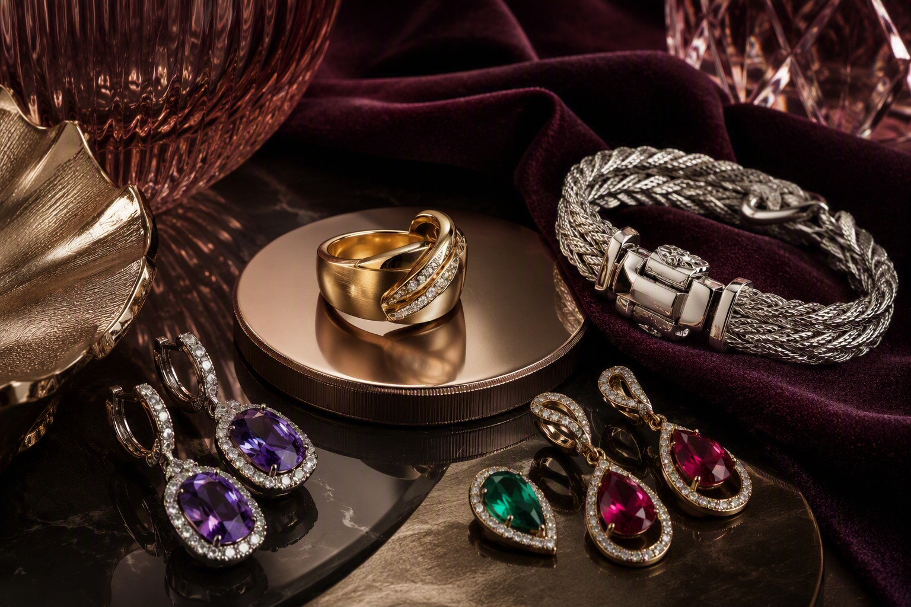
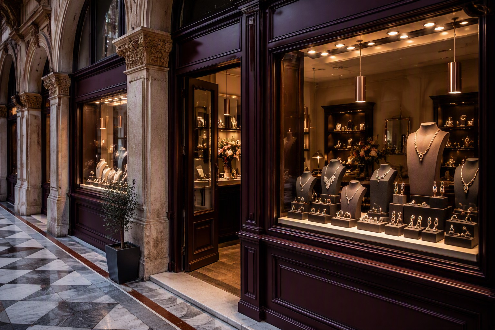
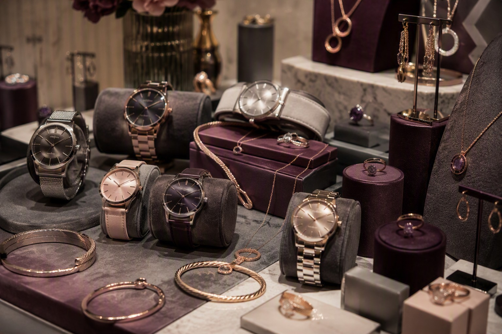
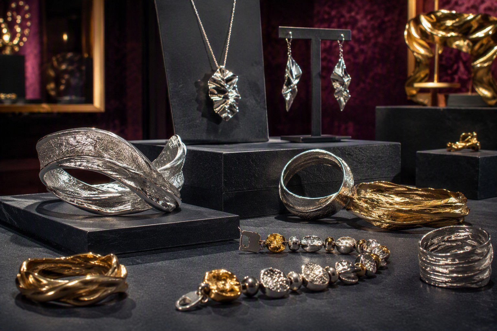
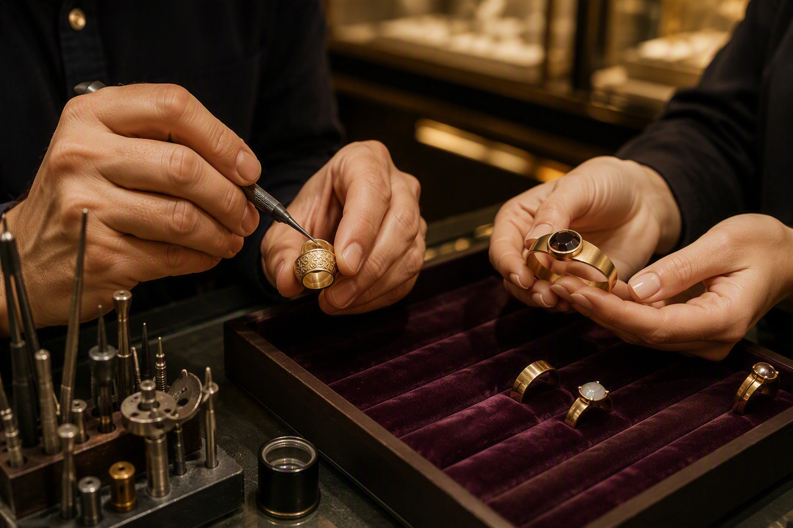
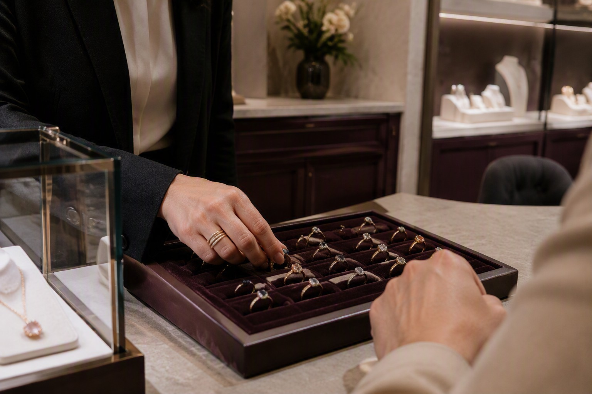

GEMME E COLORE

JEWELRY · WATCHES · TRIESTE
HPRAM JEWELRY
Un concept costruito attorno a una gioielleria indipendente nel centro di Trieste, con una proposta che comprende gioielli, orologi e argenteria.
La direzione creativa combina grafite, prugna, rosa minerale e metalli champagne per comunicare un’identità più moderna e fashion.
CONTATTA LA GIOIELLERIA
LA SELEZIONE




TRIESTE
Una boutique inserita nella passeggiata cittadina, raccontata attraverso visual cosmopoliti e dettagli gioiello.
SERVIZI
Supporto nella scelta del gioiello o dell’orologio più adatto.
Una proposta retail che comprende gioielli, orologi e argenteria.
Il concept prevede richieste dedicate e lavorazioni da confermare con il titolare.
Una selezione pensata per ricorrenze e momenti speciali.

CURA DEL DETTAGLIO
La sezione mostra come valorizzare eventuali servizi di incisione, modifica o manutenzione, da confermare direttamente con la gioielleria.
IN BOUTIQUE
Un’esperienza semplice e personale, dalla prima idea fino al gioiello scelto.
CHIAMA LA GIOIELLERIA